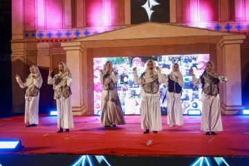

Pusat pendidikan kader pemimpin masa depan berstandar global di bawah naungan Yayasan Al Mujtaba Indonesia Sukoharjo.
Mengenal lebih dekat lingkungan pendidikan berbasis pesantren terpadu sejak tahun 2010.
Suasana lingkungan kampus & asrama ICBS Sukoharjo.
SMP - SMA Insan Cendekia Al Mujtaba (ICBS) Sukoharjo mengintegrasikan Kurikulum Nasional, Kurikulum Pesantren (Diniyah), serta pembinaan kepemimpinan (*leadership*) secara komprehensif.
Didukung oleh tenaga pendidik profesional dan lingkungan asrama (*boarding*) yang kondusif, aman, serta Islami guna mengoptimalkan potensi akademik dan spiritual santri secara maksimal.
Jl. Ovensari Raya / No. 9, Kadilangu, Kec. Baki, Kab. Sukoharjo, Jawa Tengah 57556
Fasilitas pembelajaran terstruktur untuk jenjang Sekolah Menengah Pertama dan Menengah Atas.
Menggunakan Kurikulum Merdeka yang disinergikan dengan penguatan pondasi keislaman, tahfidzul Quran, serta pembinaan karakter mandiri santri.
Full Day & Boarding SystemFokus pada pendalaman sains, teknologi, bahasa asing, serta persiapan intensif masuk Perguruan Tinggi Negeri (PTN) favorit dan luar negeri.
Program Unggulan SNBP / UTBKMengasah keterampilan non-akademik, kepemimpinan, serta potensi minat santri secara optimal.
Pendalaman hafalan Al-Qur'an dan seni baca quran.
Debat, public speaking, dan percakapan bahasa asing.
Persiapan kompetisi Matematika, Fisika, Biologi, dll.
Pembinaan fisik, futsal, bulu tangkis, dan bela diri.
Komik digital, seni rupa, teater, dan jurnalistik.
Desain grafis, videografi, dan dasar pemrograman.
Berbagai kemudahan dan apresiasi bagi calon santri berprestasi serta berdedikasi tinggi.
Diberikan kepada calon santri yang memiliki peringkat kelas paralel unggulan atau pemenang kejuaraan lomba tingkat kabupaten/provinsi/nasional.
Khusus calon santri dengan pencapaian hafalan Al-Qur'an minimal jumlah juz tertentu (melalui tes verifikasi/munaqasyah langsung).
Wujud kepedulian yayasan untuk memberikan kesempatan menimba ilmu bagi anak yatim atau kader potensial yang memenuhi syarat administratif.
Wadah pengembangan bakat, kreativitas, dan jiwa kepemimpinan santri.

Ajang tahunan bergengsi di mana para murid belajar langsung mengelola sebuah *event* besar. Menampilkan pentas seni kreatif, teater, musikal, dan pameran karya seni rupa.
Festival akbar yang memuat berbagai perlombaan akademik dan non-akademik antar pelajar sebagai wadah penumbuhan jiwa sportivitas dan unjuk prestasi.
Tahun Pengalaman (Sejak 2010)
Santri Aktif Berprestasi
Guru & Pembina Profesional
Lulusan Melanjutkan ke PTN / Luar Negeri
Rekam jejak membanggakan di tingkat regional hingga nasional.
Meraih Medali Emas Olimpiade Sains Siswa Nasional Bidang Bahasa Inggris serta kompetisi biologi.
Memborong juara pertama dalam ajang FLS2N meliputi cabang lomba Komik Digital, Jurnalistik, dan Kriya.
Mencatatkan persentase penerimaan siswa ke Perguruan Tinggi Negeri (PTN) jalur SNBP tertinggi.
Amankan kursi putra-putri tercinta Anda di lingkungan sekolah Islam berstandar internasional. Kuota terbatas setiap gelombangnya!